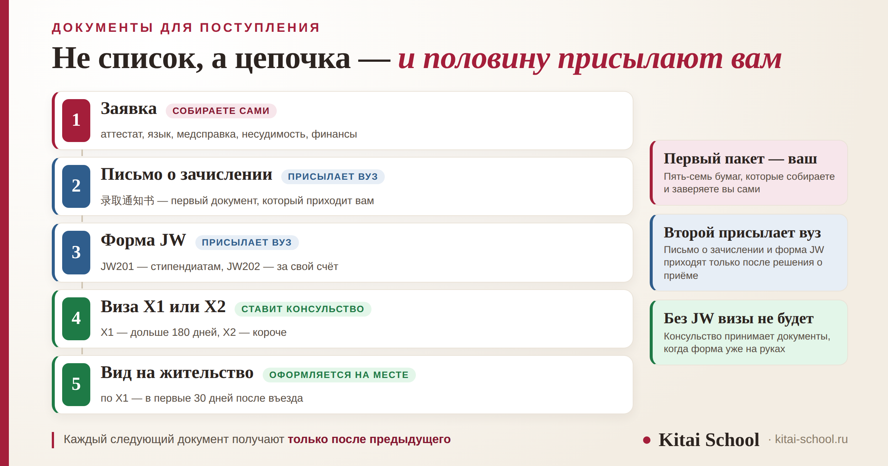
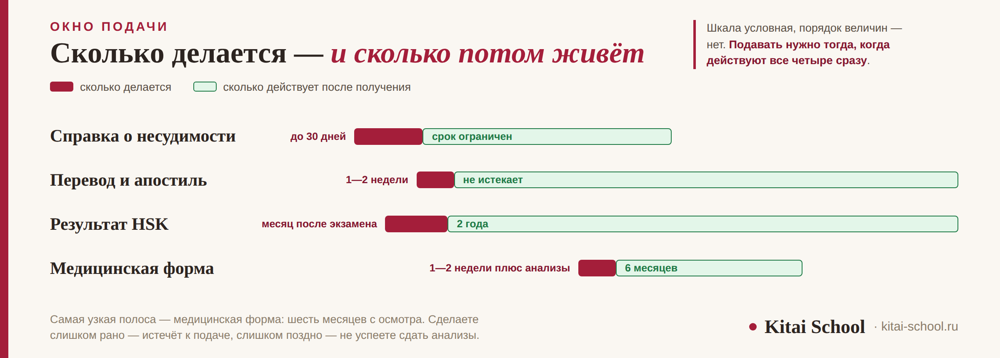

Образование в Китае
Документы для поступления в Китай: полный список и логика подготовки


Пакет документов для китайского вуза обычно представляют одним списком, и это первая причина, по которой люди выпадают из сроков. Пакетов на самом деле два: один вы собираете сами до решения о приёме, второй присылает вам вуз после. И внутри первого работает механика, о которой редко предупреждают: часть бумаг долго делается, а часть быстро истекает. Разберём состав, сроки и цепочку целиком — до визы и первых тридцати дней в Китае.
Первый пакет — ваш: аттестат или диплом, подтверждение языка, медицинская форма, справка о несудимости, подтверждение финансов, мотивационное письмо. Второй присылает вуз: письмо о зачислении и форма JW201 или JW202, без которых визу не оформить. Сроки конфликтуют: медицинская форма действует 6 месяцев, результат HSK — 2 года, и подать нужно, пока действительны все сразу. После въезда по визе X1 есть 30 дней на вид на жительство.
Короткий ответ: пакета два, а не один
Документы делятся на две стадии, и путать их не стоит.
- До решения вуза — то, что собираете и заверяете вы: образование, язык, здоровье, несудимость, деньги, мотивационное письмо. Это и есть «пакет документов», который имеют в виду, когда спрашивают, что нужно для поступления.
- После решения вуза — то, что присылают вам: письмо о зачислении 录取通知书 и форма JW201 или JW202. Без них в консульстве не примут заявление на визу.
Между пакетами проходит время, и это тоже планируют. Вуз рассматривает заявку от нескольких недель до пары месяцев, потом оформляет документы, потом отправляет их почтой. Если считать только срок подачи и дату начала занятий, этот промежуток выпадает из расчёта целиком.
Почему это важно: второй пакет нельзя подготовить заранее. Его получают только после приёма, и на него закладывают время отдельно — между решением вуза и началом учёбы.
Первый пакет: что собираете вы
Состав у большинства вузов похож. Ниже — ядро, которое просят почти везде, и то, что зависит от программы.
Просят практически всегда:
- Документ об образовании с оценками. Аттестат для бакалавриата, диплом с приложением для магистратуры. Нужен перевод и заверение — это самая долгая часть.
- Подтверждение языка. Если программа идёт на китайском — отчёт с результатом HSK; если на английском — IELTS, TOEFL или справка о том, что предыдущее образование было англоязычным.
- Загранпаспорт. Срок действия должен покрывать весь период учёбы с запасом.
- Медицинская форма. Foreigner Physical Examination Form по установленному образцу.
- Справка о несудимости. У неё ограниченный срок годности.
- Подтверждение финансов. Нужно и вузу, и позже консульству.
Зависит от программы:
- Мотивационное письмо и план обучения. На стипендиальных программах их читают внимательно, а не для галочки.
- Рекомендательные письма. Обычно два, чаще на магистратуре и на грантах.
- Результат вступительного экзамена. Часть вузов принимает по испытаниям, для иностранцев это нередко экзамен CSCA.
- Портфолио. На творческих направлениях.
Единого федерального списка нет: рамку задаёт министерство, а конкретный состав ставит университет. Поэтому любой список в интернете, включая этот, — типичная картина, а не закон. Точный перечень всегда висит на странице программы, и сверяться стоит именно с ним: у соседних факультетов одного вуза требования иногда различаются.
Полную картину требований под конкретную ступень мы разбирали отдельно: бакалавриат в Китае, а для выпускников колледжа логика другая — поступление после колледжа.
Срок изготовления против срока годности
Вот то, из-за чего чаще всего срывается подача. У каждого документа два срока: сколько он делается и сколько потом действует. И эти сроки не совпадают.

Из этого следует простое правило: подавать нужно в тот промежуток, когда действительны все документы сразу. Самая узкая полоса здесь — медицинская форма: она действительна шесть месяцев с даты осмотра. Сделаете слишком рано — истечёт к подаче; слишком поздно — не успеете сдать анализы.
Сам осмотр занимает не один день: в него входят анализы крови, флюорография, ЭКГ, УЗИ и общий приём. И нужен он тем, кто едет учиться дольше полугода.
Если считаете план назад от дедлайна, начинайте со справки о несудимости — она делается дольше всех, — а медицинскую форму ставьте ближе к подаче. Подробный календарь под грантовые дедлайны у нас разобран отдельно: как собрать сильное досье на грант.
Заверение: апостиль вместо легализации
Документы об образовании переводят и заверяют. Процедура изменилась недавно: с 7 ноября 2023 года для материкового Китая действует Гаагская конвенция, и прежняя двухступенчатая консульская легализация заменена апостилем — одной отметкой, которую ставит уполномоченный орган в стране выдачи документа.
Практический смысл: процедура стала короче и дешевле. Но требования конкретных вузов расходятся, и это тот случай, когда дешевле один раз написать в приёмную комиссию, чем оплатить не ту процедуру. Подробнее про заверение — в разборе поступления после колледжа.
HSK: сертификат навсегда, результат на два года
Здесь прячется ошибка, которая стоит людям года. Сертификат HSK бессрочен — это документ о том, что вы сдали экзамен, и силы он не теряет. А вот результат — 成绩报告, отчёт с баллами, — для подачи в вуз действителен два года с даты экзамена.
Вузы и стипендиальные программы смотрят именно на результат. Сертификат пятилетней давности формально у вас есть, но как подтверждение языка он уже не работает.
Учащаяся собирала документы на магистратуру и была уверена, что с языком у неё всё закрыто: HSK 5 она сдала, сертификат лежал дома.
Выяснилось это за полтора месяца до дедлайна, когда она загружала сканы в систему. Экзамен был сдан два года и четыре месяца назад — результат уже не принимался.
Ближайшая дата экзамена оказалась через три недели, результаты приходят примерно через месяц. Мы посчитали: по срокам она попадала впритык, без запаса ни на один день.
Успела. Но с тех пор я прошу учащихся первым делом посмотреть на дату в отчёте — не на сертификат, а именно на дату экзамена. Это тридцать секунд, которые иногда экономят год.
Отсюда практический вывод: считайте срок от даты экзамена, а не от даты, когда вы получили бумагу. И если до подачи остаётся меньше полугода, а два года на исходе — проще пересдать, чем спорить с приёмной комиссией. Что именно проверяет экзамен и как устроены уровни — в разборе сертификата HSK.
Второй пакет: что присылает вуз
После решения о приёме вам приходят два документа, и оба нужны для визы.
| Документ | Что это | Кому |
|---|---|---|
| 录取通知书 письмо о зачислении | подтверждение, что вас приняли на программу | всем поступившим |
| JW201 | форма для оформления учебной визы | стипендиатам китайского правительства |
| JW202 | та же роль, другой канал | тем, кто учится за свой счёт |
| DQ | форма для коротких программ | если учёба от 30 до 180 дней |
Разница между JW201 и JW202 только в том, по какому каналу вы поступили: первая идёт со стипендией китайского правительства, вторая — без неё. На саму визу это не влияет.
Что здесь идёт не так: формы приходят почтой, в оригинале, и этот этап закладывают в план реже всего. Между письмом о зачислении и моментом, когда конверт у вас на руках, может пройти несколько недель.
Виза и первые 30 дней в Китае
С письмом о зачислении и формой JW идут в консульство. Виза бывает двух видов, и выбирать не приходится — он определяется длительностью программы.
- X1 — если учиться дольше 180 дней. Это долгосрочный вариант, и сама виза даёт только въезд.
- X2 — если 180 дней и меньше: языковые курсы, семестр по обмену, летние программы.
Дальше важное, о чём забывают: по визе X1 после въезда есть 30 дней, чтобы оформить вид на жительство 居留许可 в местном управлении общественной безопасности. Виза сама по себе право на длительное пребывание не даёт — его даёт вид на жительство.
Для этого снова понадобятся письмо о зачислении, паспорт и медицинские документы, а медосмотр нередко проходят ещё раз уже на месте. Это не придирка: китайская справка оформляется по местным правилам.
Что начинать заранее
Три вещи, которые имеет смысл запустить раньше всего остального.
- Справку о несудимости. Делается дольше всех, и ускорить её нельзя.
- Перевод и апостиль документа об образовании. Срока годности у них нет, а времени они берут много — значит, это можно и нужно сделать заранее.
- Экзамен по языку. Результат приходит не сразу, а действует два года. Сдавать лучше с запасом, а не в сезон подачи.
И одна вещь, которую наоборот не стоит торопить: медицинская форма. Её делают в последнюю очередь, ближе к подаче.
Если вы ещё не определились с программой и вузом, документы — не первый шаг. Сначала стоит выбрать, куда подавать: об этом у нас отдельный разбор — как выбрать университет, и обзор возможных входов — четыре входа в вуз.
Мини-словарь: восемь обозначений
| Обозначение | Что это |
|---|---|
| 录取通知书 | письмо о зачислении, Admission Notice |
| JW201 | визовая форма для стипендиатов китайского правительства |
| JW202 | визовая форма для тех, кто учится за свой счёт |
| DQ | форма для программ длительностью от 30 до 180 дней |
| X1 | учебная виза для программ дольше 180 дней |
| X2 | учебная виза для программ до 180 дней включительно |
| 居留许可 | вид на жительство, оформляется после въезда по X1 |
| 成绩报告 | отчёт с результатом HSK, действителен два года |
Переписка с приёмной комиссией, названия форм, уточняющие вопросы — всё это проще делать на китайском, и начинается оно с обычной лексики, а не с юридической. На занятиях мы разбираем и такие письма тоже. Отдельно есть программа подготовки к HSK, без которого в большинство вузов не подать: подготовка к HSK. Оставить заявку или написать в Telegram.
Частые вопросы (FAQ)
Какие документы нужны для поступления в Китай?
Пакетов два. Первый собираете вы: документ об образовании с оценками и его заверенный перевод, подтверждение языка, загранпаспорт, медицинскую форму, справку о несудимости и подтверждение финансов; на части программ — мотивационное письмо и рекомендации. Второй присылает вуз после решения о приёме: письмо о зачислении 录取通知书 и форму JW201 или JW202, без которых не подать на визу.
Что нужно для поступления в Китай, если начинать с нуля?
Сначала выбрать программу и вуз — требования к документам зависят от ступени и от того, на китайском или английском идёт обучение. Дальше запустить то, что делается дольше всего: справку о несудимости, перевод и апостиль документа об образовании, экзамен по языку. Медицинскую форму наоборот оставляют напоследок, потому что она действительна всего полгода.
Сколько действует медицинская справка для китайского вуза?
Foreigner Physical Examination Form действительна шесть месяцев с даты осмотра. Сам осмотр включает анализы крови, флюорографию, ЭКГ, УЗИ и общий приём, поэтому занимает не один день. Проходить его обязаны те, кто едет учиться дольше полугода, то есть по визе X1. По приезде нередко назначают повторный осмотр уже в Китае.
Нужен ли апостиль на документы об образовании?
С 7 ноября 2023 года для материкового Китая действует Гаагская конвенция, и прежняя двухступенчатая консульская легализация заменена апостилем — одной отметкой уполномоченного органа страны, выдавшей документ. Процедура стала короче и дешевле. Требования конкретных вузов при этом расходятся, поэтому форму заверения стоит уточнить в приёмной комиссии до оплаты.
Сколько действует сертификат HSK при поступлении?
Сам сертификат бессрочен, а вот отчёт о результатах 成绩报告 действителен два года с даты экзамена — и именно на него смотрят вузы и стипендиальные программы. Считать срок нужно от дня экзамена, а не от дня, когда вы получили бумагу. Если два года на исходе, проще пересдать, чем спорить с приёмной комиссией.
Что такое JW201 и JW202 и чем они отличаются?
Это формы, которые вуз присылает поступившему для оформления учебной визы. JW201 выдают стипендиатам китайского правительства, JW202 — тем, кто учится за свой счёт; на саму визу разница не влияет. Для коротких программ длительностью от 30 до 180 дней вместо них выдают форму DQ. Формы приходят почтой в оригинале, и этот этап стоит закладывать в план отдельно.
Дальше по теме: бакалавриат в Китае; поступление после колледжа; поступление без ЕГЭ; что подавать, пока аттестата нет; как собрать сильное досье на грант; стипендии для иностранцев; и про сам экзамен — сертификат HSK.
Источники
- Гаагская конвенция, отменяющая требование легализации иностранных официальных документов: вступила в силу для материкового Китая 7 ноября 2023 года, заменив консульскую легализацию апостилем.
- Правила экзамена HSK: сертификат бессрочен, отчёт о результатах действителен два года с даты экзамена и в этом виде принимается вузами.
- Визовые и миграционные требования для иностранных учащихся: Foreigner Physical Examination Form действительна 6 месяцев с даты осмотра; формы JW201 и JW202 и их назначение; форма DQ для программ от 30 до 180 дней; визы X1 и X2 с границей в 180 дней; оформление вида на жительство в течение 30 дней после въезда по X1.
- Практика Kitai School — вопросы учащихся, готовивших документы в китайские вузы.
- Оговорка: состав пакета и требования к заверению вуз определяет сам, и они расходятся между университетами и программами. Сроки изготовления справок в России различаются по регионам. Суммы для подтверждения финансов в статье не приводятся намеренно — их задаёт принимающая сторона. Там, где требования расходятся, надёжнее один раз написать в приёмную комиссию.
Пусть бумаги не отнимут у вас лишнего времени! 一切顺利！